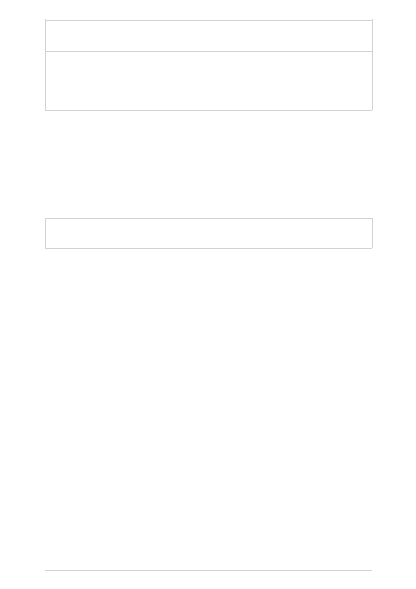

System
message
User
Assistant
have a daughter named Lucy
---
Given the snippets, fact check
each of the factual claims
above:
This is a variation on the break the task down technique. Instead of splitting a task into
smaller steps, in this approach the model response is instructed to proceed step-by-step
and present all the steps involved. Doing so reduces the possibility of inaccuracy of
outcomes and makes assessing the model response easier.
System
message
User
Assistant
Chain of thought prompting